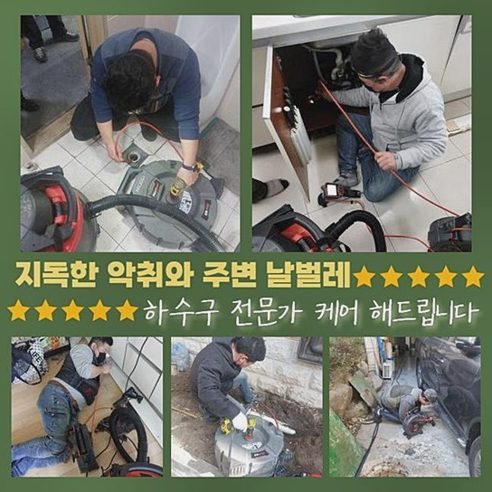
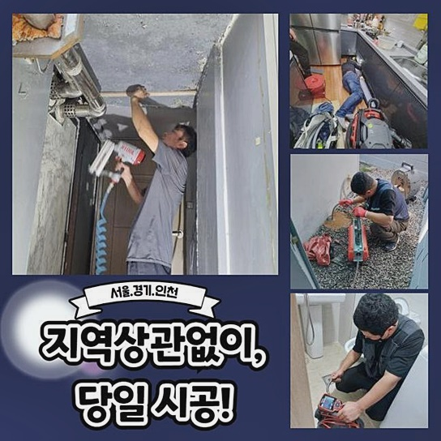
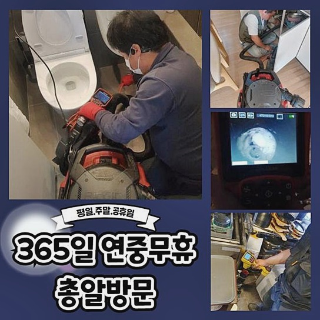
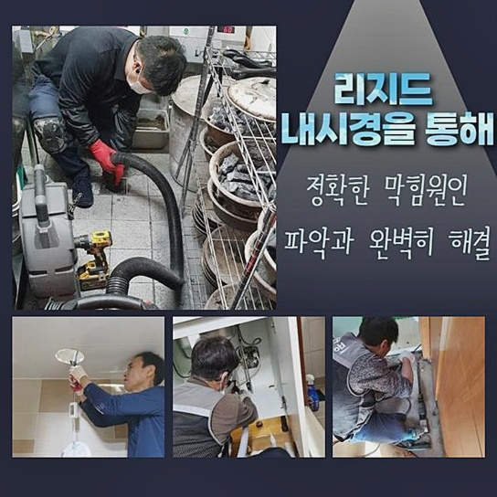
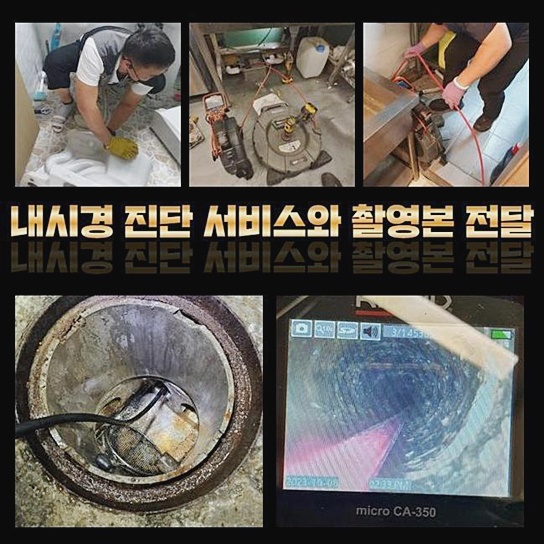

🏠 부천 성곡동오수관막힘 신흥동 악취차단 해결방법
용인 싱크대막힘 전문 시공 후기

📋 작업 개요
- 위치: 용인
- 서비스 유형: 싱크대막힘, 변기막힘, 하수구막힘, 배관막힘, 역류해결, 뚫는업체, 배관청소, 고압세척, 악취차단
- 작업 일시: 2024. 10. 1. 11:44
- 업체명: 하수구수사대 (010-5615-2118)
🔍 문제 상황
부천 성곡동오수관막힘 신흥동 악취차단 해결방법
근래에 고객님들이 싱크대의 배수관이 이상이 생겨 연락 주고 계십니다
며칠전 종합적인 이유의 애로사항으로 놀라셨던 의뢰자님의 현장문제를 풀어내려 합니다
의뢰자분께서 자택 발코니 안쪽에 배수가 막히게되어 사용하지 못한다고 연락해주셨어요
세탁기기를 쓸때마다 오수가 솟구쳐 넘친다고 하셨습니다
물막힘의 연유를 알아보고 고객분의 피해를 바로 해결하고자 빠르게 피해장소로 도착했습니다
고객님집에 방문한 후 베란다부근의 문제지점을 검수해 봤습니다
의뢰하실때 같이 말해주신 것처럼 세탁실쪽의 배수관이 막혀버려 오수가 흐름을 거스르는 상황이었습니다
진입부에 바깥으로 나온 기름 덩어리도 떠돌고 있는것을 보게되었습니다
하수관을 뚫어내는 기기인 석션장치를 운용하여 호스막힘이 된 곳을 흡입하여 제거하였습니다
베란다부근의 하수구에 쌓여있는 부유물도 모두 빼내었습니다
가끔씩 생기는가다 단조로운 문제들은 꾸준히 석션장치로 문제들이 제거될수 있어요

🔎 원인 분석
💡 전문가 진단: 정밀 진단 장비를 사용하여 슬러지의 고착 여부를 판명하고 타격/세척 작업을 실시했습니다.
여러차례 석션 작업 후 수도를 조금 부어 배수검열을 진행하니
잠깐 물빠짐 현상이 보여 해결된 것 같았으나 대번에 다시금 물들이 일정높이에 다다라 올랐습니다
이번에는 단조로운 막힘이 아니였어요
하수구가 막혀버린 곳을 쉽게 확인가능한 장치인 내시경을 통해 하수가 막힌부분의 문제점을 보았습니다
내시경기계는 가늘고 긴 케이블 시작점에 소형렌즈가 붙어있는 기계로 고객분들이 건강검진시에 사용되는 대장내시경장치와 동일한 기계로서
직접적으로 보지 못하는 배관 속안의 증세를 관찰 할수도 있었어요
내시경장치를 투입시켜 막혀있는 곳을 체크해보니 디스플레이에 잔해물과 기름때 등등 온갖 오염물의 모습이 확인할수 있었습니다
물이 흐르는 곳까지 가로막혀 흐르기 힘들 정도 였지만 막혀버릴 규모는 아니더라구요
내시경으로 깊은 속안까지 가용시켜 주름져 있는 배관속 내부를 관찰하였어요
주방에있는 싱크대의 배관과 이어지는 라인에서 잔해들이 보이게 되었습니다
싱크대의 배관에서 자주 사용하게 되는 주름관의 부스러기가 배관속에 들어가 있었어요
하수관 커버를 통과 할수있는 사이즈는 아닌것으로 주방싱크를 시공하면서 부스러기를 흘려버린것 처럼 생각되었어요

🔧 작업 과정
다양한 폐조각과 잔해물끼리 마찰력이 늘어나면서 압력이 발생되어 배관의 내부까지 피해를 만들기도 하여 깨지게 되는 일도 있었어요
세탁실의 세탁기와 싱크대 하수관과 연결돼있어 오물찌꺼기로 배수관 내부 속 안쪽도 가로막혀서 두곳에서 동시에 물을 사용하게 될때마다 흐름을 거스르는 현상이 생길수밖에 없어요
샤프트장치를 가용시켜 거실 세탁실과 배수관 세척을 하게되었습니다
샤프트기는 모터랑 체인이 연결된 스케일링 장치로 모터전원을 가동 하게되면 끝에 달려있는 사슬형태가 회전하는 기기입니다
헤드체인노커라는 사용되는 쇠사슬들의 회전하는 형태로 정체 되어있는 곳을 걷어내서 배관청소가 수월하게 이뤄져요
샤프트를 작동 진행해 주면서 내시경장비를 함께 운용하여 잔해가 제일 많은 곳 초점을 맞춰 목표설정하고 청소하였습니다
사이사이 하수를 부으면서 잔해물 제거를 도와주며
파쇄된 오물과 기름때 잔해들은 석션기계를 투입해 빨아들여 제거했습니다
작업을 진행하던 중간 의뢰자님께서는 호스조각들이 어째서 배관 안쪽에 들어갔는지 납득하기 어렵다고 말하셨어요
과거에 리모델링 작업중 작업하는 사람들의 불찰로 인하여 이런 결함이 발생했을 가망성이 있을것이다 말하니까 당혹스러움을 감추지 못하셨어요
저희작업자들은 의뢰자님께 예측불가능한 오염물이 물막힘이 발생한 원인이 생기는 경우를 안내를 해드리면서 언제든 일어나게되는 현상이라고 안내하였습니다
게다가 우리 팀원들은 유사경험들을 하게되며 문제점을 해결하였다고 강조하여 말씀드렸어요
싱크볼에서 배관의 연결부위의 물막힘이 발생했던 연결관을 제거 해보니 배관조각의 길이 또한 길어서 배수관을 막히게 할수있다고 확인되었어요
이와같은 찌꺼기로 배수관이 막혀버려서 거실 세탁실과 싱크볼 배관이 서로 통하여 양측에서 물을 사용하게 될때마다 물막힘이 생겨 역행되는 결함이 발생할 수밖에 없었습니다
원인부를 해결하니 고객께서도 안심이 되신다 말씀하셨어요
주방싱크대 배관을 고친뒤에 배관속에서 나오게된 잔해물들의 모습은 생각보다 많았었어요
저희업체는 이물질은 거름망으로 분리하여 오수는 변기통에 처리하고 건더기로 되어있는 잔해들은 저희가 직접 자취없이 처리를 하였습니다
처리할것을 끝낸뒤에 싱크대의 배수관을 체크했습니다
세탁실의 세탁기쪽 모두 배수흐름 검사를 진행하니 오수가 문제없이 빠지는걸 확인하였습니다


✅ 작업 완료
기존에 발생했던 오수역류현상도 일어나지 않는 것들을 확실하게 확인한 뒤 작업한 자리를 정리를 끝내고 기계들을 챙겨서 복귀하였습니다
갑작스럽게 하수구에서 오수가 출수되지 않고 역으로 분출되는 등 불미스러운 문제가 나타난다면 신속히 전문가한테 의뢰하는게 확실한 해결법입니다
현장들에 따라 문제점 제거 작업과 조치로 이상사태를 해결할 수 있기 때문입니다
저희전문진은 고객분들이 불편없이 일상생활을 지낼 수 있게 빠른 시간 내 꼼꼼하게 문제들을 바로잡아 드릴게요
언제라도 의뢰 해주시면 신속하게 기술적인 관리를 제공해 드릴게요 감사드립니다



⚠️ 주방 싱크대 배관 막힘 예방 수칙
- ✅ 기름기가 묻은 식기나 프라이팬은 설거지 전 키친타올로 반드시 기름때를 닦아내세요.
- ✅ 주기적으로 싱크대 개수대에 뜨거운 물을 가득 받아 한 번에 내려 배관 내부 기름을 씻어내세요.
- ✅ 배수구 거름망을 미세한 필터로 사용하시고 음식물 찌꺼기가 틈으로 새어 들지 않게 관리하세요.
- ✅ 베이킹소다와 식초를 뜨거운 물과 함께 일주일에 한 번씩 부어주면 배관 살균과 막힘 예방에 좋습니다.
💡 핵심 정리
- 확실한 장비 작업(내시경 점검 및 샤프트 스케일링)으로 원인을 뿌리 뽑습니다.
- 작업 후 1년 이내에 동일한 부위 재발 시 100% 무상 A/S 서비스를 보장합니다.
- 서울 · 경기 · 인천 전 지역에 24시간 언제든 긴급 출동할 수 있도록 항시 대기 중입니다.
❓ 자주 묻는 질문 (FAQ)
🚨 용인 싱크대막힘 문제로 고민이신가요?
정확한 원인 진단과 확실한 시공으로 재발 없는 해결을 약속드립니다.
24시간 긴급 출동 | 서울 · 경기 · 인천 전지역 | 1년 내 재발 시 무상 A/S